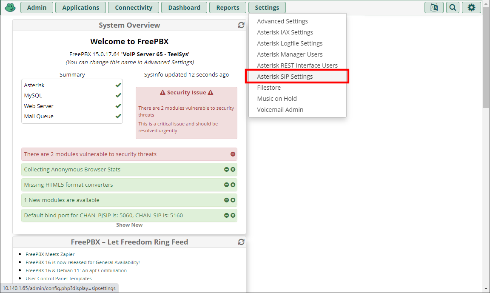

It is necessary to make a few changes to the Legacy SIP settings in FreePBX to get the Cisco 79xx IP Phones to work as well as modifying settings for each extension. Below are the steps needed to get the Cisco 79xx IP Phones working with the RasPBX installation of FreePBX.
Configure Legacy SIP (chan_sip) in FreePBX
-
In FreePBX, select Settings => Asterisk SIP Settings from the menu
 -
Switch to the SIP Legacy Settings [chang_sip] tab and change the following items
- NAT: No
- Enable SRV Lookup: No
-
Settings => Asterisk SIP Settings => SIP Legacy Settings tab => Activate TCP => Yes
Add extensions for the Cisco 79xx Phones
-
Log into FreePBX and navigate to Applications > Extensions

-
Click the Add Extension button and select Add New SIP (Legacy) [chan_sip] Extension
![FreePBX Extensions Application - Add New SIP (Legacy) [chan_sip] Extension](../images/phones/cisco79xx/RasPBX-Extensions_06b.png)
-
Enter the following infromation on the General tab
- Display Name: Enter a name to display on phones when placing a call. (Internal caller id)
- Outbound CID: Enter the Caller Id to be displayed for outgoing calls. NOTE: This only appears in FreePBX logs and is not displayed on called person's phone.
- Emergency CID: Leave Blank
- Secret: Enter the authPassword from the Cisco SIP file for the phone. Cisco 79xx phones can have a max of 8 characters and they all must be numeric.
-
Switch to the Advanced tab and enter the following
- Send RPID: Send Remote-Party-ID header
- NAT Mode: Never - (no)
- Qualify: No